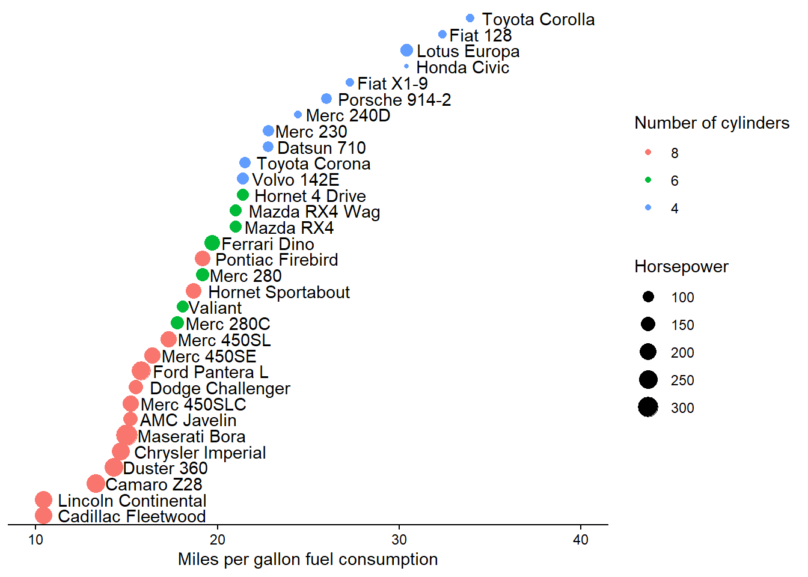

library(tidyverse)
library(knitr)assignment_9
Exercise 1: Unit Converter
1.1 Write a function that can convert Fahrenheit to Celsius, based on the following formula C = (F - 32) * 5/9
# create function
f_to_c <- function(F) {
C = (F - 32) * 5/9
return(C)
}Take your function for a spin, does it correctly return the correct values?
32 F = 0 C
f_to_c(32)[1] 050 F = 10 C
f_to_c(50)[1] 10212 F = 100 C
f_to_c(212)[1] 1001.2 A student came from ‘tropical Canada’. She doesn’t like the cold but she really didn’t like it when it’s hot. Although she wanted to know what the temperature is in Celsius when the US weather channel reported it in Fahrenheit, there are certain points at which it was just too cold or too hot for to to care about the exact value. Modify the f_to_c function below to print the following, and check if your function works properly using the input of -10 F, 60 F, and 90 F.
If the temperature is less than -20 C, print “Don’t bother going out.”
If the temperature is greater than 30 C, print “I’m moving back to Canada.”
If the temperature is between -20 C and 30 C, print the temperature in Celsius.
# create new function to return messages based on temp
f_to_c_message <- function(F) {
C = (F - 32) * 5/9
if(C < -20) {
print("Don't bother going out")
}
if(C > 30) {
print ("I'm moving back to Canada")
}
if(-20 < C & C < 30) {
print(C)
}
}The following is how it should work:
f_to_c_message(-10)[1] "Don't bother going out"f_to_c_message(60)[1] 15.55556f_to_c_message(90)[1] "I'm moving back to Canada"Exercise 2: Set Operation
The R function setdiff(x,y) returns the elements of a vector x that are not in y. For example, say x is a list of singers who can reach very high registers, and y is a list of musicians who died in 2016. setdiff(x, y) would return a list of singers with high voices who did not die in 2016.
x <- c("prince", "mj", "sam cook", "whitney", "dolly")
y <- c("sharon jones", "prince", "bowie", "leonard cohen", "phife dawg")
setdiff(x,y)[1] "mj" "sam cook" "whitney" "dolly" However, sometimes you want a function to return the elements that are in x or y but not both. Here, write such a function, and use your custom function to find the names of singers who either have high voices, but did not die in 2016, OR who died in 2016 but do not have high voices.
Your function will need to work for any vectors, not just the ones in this example. The output should be a single vector, not two vectors.
Hint: you will need R’s set operations.
# my custom function
unique_element <- function(x, y) {
high_voice <- setdiff(x, y)
died_2016 <- setdiff(y, x)
print(c(high_voice, died_2016))
}The following is how it should work:
# output
unique_element(x, y)[1] "mj" "sam cook" "whitney" "dolly"
[5] "sharon jones" "bowie" "leonard cohen" "phife dawg" Exercise 3: Fuel efficiency of Car Models
This exercise uses the mtcars dataset, which is available in base R. It was extracted from the 1974 Motor Trend US magazine, and comprises fuel consumption and 10 aspects of automobile design and performance for 32 automobiles (1973–74 models). Let’s first convert mtcars to tibble format such that the row names become a column named “model”.
mtcars_tbl <- as_tibble(mtcars, rownames = "model")
mtcars_tbl |>
head() |>
kable()| model | mpg | cyl | disp | hp | drat | wt | qsec | vs | am | gear | carb |
|---|---|---|---|---|---|---|---|---|---|---|---|
| Mazda RX4 | 21.0 | 6 | 160 | 110 | 3.90 | 2.620 | 16.46 | 0 | 1 | 4 | 4 |
| Mazda RX4 Wag | 21.0 | 6 | 160 | 110 | 3.90 | 2.875 | 17.02 | 0 | 1 | 4 | 4 |
| Datsun 710 | 22.8 | 4 | 108 | 93 | 3.85 | 2.320 | 18.61 | 1 | 1 | 4 | 1 |
| Hornet 4 Drive | 21.4 | 6 | 258 | 110 | 3.08 | 3.215 | 19.44 | 1 | 0 | 3 | 1 |
| Hornet Sportabout | 18.7 | 8 | 360 | 175 | 3.15 | 3.440 | 17.02 | 0 | 0 | 3 | 2 |
| Valiant | 18.1 | 6 | 225 | 105 | 2.76 | 3.460 | 20.22 | 1 | 0 | 3 | 1 |
From mtcars_tbl, reproduce the following plot, which shows the miles per gallon (mpg) of car models on the x axis (see hints below). Different models are ordered on the y axis according to their mpg and their names are shown next to the data points. Also, the size of each data point maps to its horse power (hp), and the color maps to number of cylinders (cyl).
mtcars_tbl_ordered <- mtcars_tbl |>
arrange(mpg) |>
group_by(mpg)
mtcars_tbl_ordered |>
mutate(cyl_factor=as.factor(cyl)) |>
mutate(model_as_factor=as.factor(model)) |>
ggplot(aes(x=mpg, y=model_as_factor)) +
geom_point(aes(color=cyl_factor, size=hp)) +
xlim(10, 40) +
geom_text(aes(label=model_as_factor, hjust=-0.1)) +
labs(x="Miles per gallon fuel consumption", color="Number of cylinders", size="Horsepower") +
theme_classic() +
theme(axis.title.y = element_blank(), axis.text.y.left = element_blank(), axis.ticks.y = element_blank(), axis.line.y = element_blank())
Reflection Questions:
In this assignment, you wrote functions that operate on vectors (Exercises 1 and 2) and manipulated a data frame to create a plot (Exercise 3). Explain the difference between a simple character vector (like the one for singers) and a factor (like the model column). Why was it necessary to treat the model column as a factor and reorder its levels to create the final plot?
Full disclosure, I had to use ?as.factor() to figure this one out. I do not 100% understand this, but it looks like the factor setup has a specific order to it, vs. just a string of characters like we used in the first exercise. Treating it as a factor was necessary because that is what allowed us to show it in order by mpg and preserved that order (this is the part that literally took me over an hour just to figure out I needed to group it by mpg before running it). When I put the non-factor “model” column on the y-axis, it was all over the place. It needed that ordering from the as_factor function.
Identify one of the three exercises where you used an AI assistant to help generate or debug a chunk of code. Provide the specific prompt you used. Then, show the code before you finalized it (e.g., the AI’s initial suggestion or your first attempt) and the final, working code. In your commentary, explain what was missing or incorrect in the “before” version and what you learned by testing and correcting it to produce the final version.
I did not use AI to help me with this assignment, but I did use stack overflow to figure out how to do the labels on the points and remove the y-axis. I felt that using stack overflow was better because my question was specific and, speaking from having used AI for help with code before, I think it would have taken me several prompts to get what I wanted because it needs all the background information. To get what I needed on stack overflow, I Googled “how to put labels on points in r scatterplot instead of on the y axis ggplot” and “stack overflow remove axis label ggplot”. I was already really stuck on the graph and taking way longer than I planned, and I think trying to do this with AI would probably have made it take longer, at least with my level of experience.
I think the beginning said we could use AI for this but did not have to? I can go back and fix this and prompt AI if this isn’t the case.